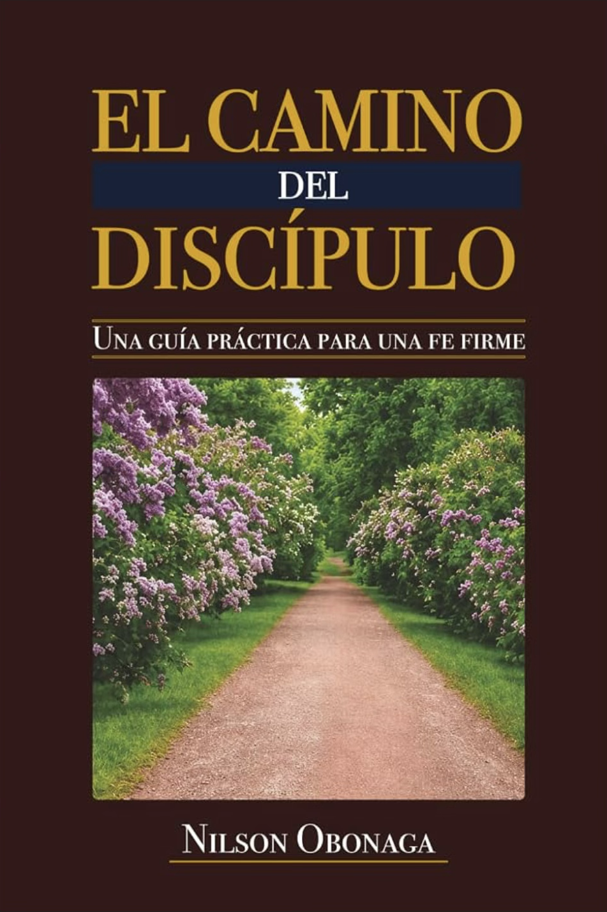

Oración · Trabajo · Fe
Una guía práctica para una fe firme
El Camino
del Discípulo
Basado en la Palabra
Sagradas
Escrituras
Fieles a Cristo
hasta el final

Ya disponible en
Amazon
Nilson Obonaga
elcaminodeldiscipulo.vercel.app